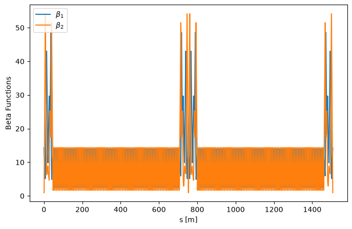
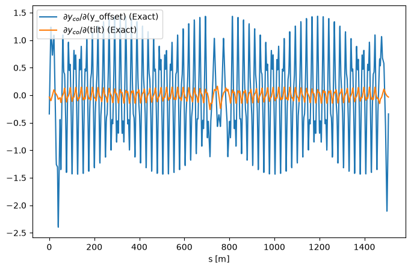
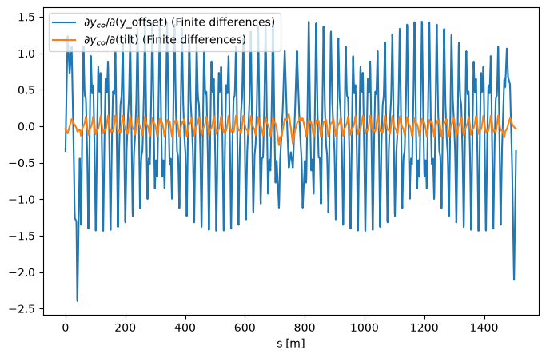

Orbit response¶
Parametric twiss example
This notebook requires knowledge of GTPSA.jl because it uses twiss with as_taylor_series=True.
import numpy as np
import matplotlib.pyplot as plt
import scibmad as sb
lat = sb.julia.include("../../lattices/RCSV5S0.jl") # the variables of the file are attributes
ring, qf_1, b0_1 = lat.ring, lat.qf_1, lat.b0_1
tw = sb.twiss(ring)
tw
Twiss:
summ:
q1 = 43.13000170559638
q2 = 56.21000112673147
q3 = -0.020744708224602955
etac = 0.0006425524685148875
alphac = 0.0006430166817195063
df:
5388×30 DataFrame
Row │ index name kind s beta1 phi1 dx x beta2 phi2 ⋯
│ [m] [m] [2π] [m] [m] [m] [2π] ⋯
──────┼─────────────────────────────────────────────────────────────────────────────────────────────────────────────────
1 │ 1 qfs_6 Quadrupole 0.0 14.264 0.0 -7.33637e-7 0.0 0.951822 0.0 ⋯
2 │ 2 qlo_1 Drift 0.47 14.264 0.00516781 -7.33639e-7 0.0 0.951822 0.0835412
3 │ 3 bpm_1 BPM 0.525 14.117 0.00578468 -7.29799e-7 0.0 0.994778 0.0925418
4 │ 4 clo_1 Drift 0.545 14.0639 0.00601058 -7.28403e-7 0.0 1.01218 0.0957142
5 │ 5 cor_1 Kicker 0.583 13.9633 0.00644216 -7.2575e-7 0.0 1.04784 0.101588 ⋯
6 │ 6 clo_2 Drift 0.84 13.2982 0.009444 -7.07806e-7 0.0 1.37893 0.135881
7 │ 7 mqa5_1 Drift 0.878 13.2021 0.00990044 -7.05153e-7 0.0 1.44117 0.140171
8 │ 8 qlo_2 Drift 6.745 5.15719 0.135786 -2.95516e-7 0.0 52.1116 0.258532
9 │ 9 qds_1 Quadrupole 6.8 5.1457 0.137485 -2.91676e-7 0.0 52.9726 0.258699 ⋯
10 │ 10 qlo_3 Drift 7.27 5.71223 0.15157 -2.75347e-7 0.0 54.1275 0.260069
11 │ 11 bpm_2 BPM 7.325 5.86232 0.153083 -2.75329e-7 0.0 53.5243 0.260232
⋮ │ ⋮ ⋮ ⋮ ⋮ ⋮ ⋮ ⋮ ⋮ ⋮ ⋮ ⋱
5378 │ 5378 qlo_702 Drift 1500.16 5.86232 42.9821 -2.75255e-7 -1.80624e-17 53.5243 56.0333
5379 │ 5379 qds_8 Quadrupole 1500.21 5.71223 42.9836 -2.75275e-7 -1.77084e-17 54.1275 56.0335 ⋯
5380 │ 5380 qlo_703 Drift 1500.68 5.1457 42.9977 -2.91612e-7 -1.5664e-17 52.9726 56.0348
5381 │ 5381 bpm_352 BPM 1500.74 5.1572 42.9994 -2.95452e-7 -1.55349e-17 52.1116 56.035
5382 │ 5382 clo_703 Drift 1500.76 5.16167 43.0 -2.96849e-7 -1.54879e-17 51.8002 56.0351
5383 │ 5383 cor_352 Kicker 1500.8 5.17061 43.0012 -2.99503e-7 -1.53987e-17 51.2113 56.0352 ⋯
5384 │ 5384 clo_704 Drift 1501.05 5.24592 43.009 -3.17449e-7 -1.47955e-17 47.3183 56.036
5385 │ 5385 mqa5_14 Drift 1501.09 5.25925 43.0102 -3.20103e-7 -1.47063e-17 46.756 56.0361
5386 │ 5386 qlo_704 Drift 1506.96 14.117 43.1294 -7.29796e-7 -9.35559e-19 0.994778 56.201
5387 │ 5387 end1 Marker 1507.01 14.264 43.13 -7.33637e-7 -8.06466e-19 0.951822 56.21 ⋯
5388 │ -1 END --- 1507.01 14.264 43.13 -7.33637e-7 -8.06466e-19 0.951822 56.21
20 columns and 5366 rows omitted
# Plot the betas
fig, ax = plt.subplots(figsize=(8, 5))
ax.plot(tw.s, tw.beta1, label=r"$\beta_1$")
ax.plot(tw.s, tw.beta2, label=r"$\beta_2$")
ax.set(xlabel="s [m]", ylabel="Beta Functions")
ax.legend(loc="upper left");

# Let's see the linear closed orbit response as a function of
# e.g. qf_1 y_alignment and b0_1 tilt (2 PARAMETERS)
DPARAMS1 = sb.Descriptor(6, 1, 2, 1) # 6 dynamic variables to 1st order, 2 parameters to 1st order
Δk = sb.params(DPARAMS1)
qf_1.y_offset = Δk[0] # make y_offset a parameter
b0_1.tilt = Δk[1] # make tilt a parameter
tw = sb.twiss(ring, GTPSA_descriptor=DPARAMS1, as_taylor_series=True)
tw
Twiss:
summ:
q1 = 43.13000170559638
q2 = 56.21000112673147
q3 = -0.020744708224603663
etac = 0.0006425524685149317
alphac = 0.0006430166817195504
df:
5388×30 DataFrame
Row │ index name kind s beta1 phi1 dx x b ⋯
│ [m] [m] [2π] [m] [m] [ ⋯
──────┼─────────────────────────────────────────────────────────────────────────────────────────────────────────────────
1 │ 1 qfs_6 Quadrupole 0.0 14.264 0.0 -7.33637e-7 TPS64{Dynamic}:\nDescriptor(NV=6… ⋯
2 │ 2 qlo_1 Drift 0.47 14.264 0.00516781 -7.33639e-7 TPS64{Dynamic}:\nDescriptor(NV=6…
3 │ 3 bpm_1 BPM 0.525 14.117 0.00578468 -7.29799e-7 TPS64{Dynamic}:\nDescriptor(NV=6…
4 │ 4 clo_1 Drift 0.545 14.0639 0.00601058 -7.28403e-7 TPS64{Dynamic}:\nDescriptor(NV=6…
5 │ 5 cor_1 Kicker 0.583 13.9633 0.00644216 -7.2575e-7 TPS64{Dynamic}:\nDescriptor(NV=6… ⋯
6 │ 6 clo_2 Drift 0.84 13.2982 0.009444 -7.07806e-7 TPS64{Dynamic}:\nDescriptor(NV=6…
7 │ 7 mqa5_1 Drift 0.878 13.2021 0.00990044 -7.05153e-7 TPS64{Dynamic}:\nDescriptor(NV=6…
8 │ 8 qlo_2 Drift 6.745 5.15719 0.135786 -2.95516e-7 TPS64{Dynamic}:\nDescriptor(NV=6… 5
9 │ 9 qds_1 Quadrupole 6.8 5.1457 0.137485 -2.91676e-7 TPS64{Dynamic}:\nDescriptor(NV=6… 5 ⋯
10 │ 10 qlo_3 Drift 7.27 5.71223 0.15157 -2.75347e-7 TPS64{Dynamic}:\nDescriptor(NV=6… 5
11 │ 11 bpm_2 BPM 7.325 5.86232 0.153083 -2.75329e-7 TPS64{Dynamic}:\nDescriptor(NV=6… 5
⋮ │ ⋮ ⋮ ⋮ ⋮ ⋮ ⋮ ⋮ ⋮ ⋱
5378 │ 5378 qlo_702 Drift 1500.16 5.86232 42.9821 -2.75255e-7 TPS64{Dynamic}:\nDescriptor(NV=6… 5
5379 │ 5379 qds_8 Quadrupole 1500.21 5.71223 42.9836 -2.75275e-7 TPS64{Dynamic}:\nDescriptor(NV=6… 5 ⋯
5380 │ 5380 qlo_703 Drift 1500.68 5.1457 42.9977 -2.91612e-7 TPS64{Dynamic}:\nDescriptor(NV=6… 5
5381 │ 5381 bpm_352 BPM 1500.74 5.1572 42.9994 -2.95452e-7 TPS64{Dynamic}:\nDescriptor(NV=6… 5
5382 │ 5382 clo_703 Drift 1500.76 5.16167 43.0 -2.96849e-7 TPS64{Dynamic}:\nDescriptor(NV=6… 5
5383 │ 5383 cor_352 Kicker 1500.8 5.17061 43.0012 -2.99503e-7 TPS64{Dynamic}:\nDescriptor(NV=6… 5 ⋯
5384 │ 5384 clo_704 Drift 1501.05 5.24592 43.009 -3.17449e-7 TPS64{Dynamic}:\nDescriptor(NV=6… 4
5385 │ 5385 mqa5_14 Drift 1501.09 5.25925 43.0102 -3.20103e-7 TPS64{Dynamic}:\nDescriptor(NV=6… 4
5386 │ 5386 qlo_704 Drift 1506.96 14.117 43.1294 -7.29796e-7 TPS64{Dynamic}:\nDescriptor(NV=6…
5387 │ 5387 end1 Marker 1507.01 14.264 43.13 -7.33637e-7 TPS64{Dynamic}:\nDescriptor(NV=6… ⋯
5388 │ -1 END --- 1507.01 14.264 43.13 -7.33637e-7 TPS64{Dynamic}:\nDescriptor(NV=6…
22 columns and 5366 rows omitted
# Closed orbit is now a Taylor series in the parameters:
# E.g. at the first element:
tw.y[1]
TPS64{GTPSA.Dynamic}:
Descriptor(NV=6, MO=1, NP=2, PO=1)
COEFFICIENT ORDER EXPONENTS
-3.4019914795086181E-01 1 0 0 0 0 0 0 7^1
-3.4327120607787705E-02 1 0 0 0 0 0 0 8^1
This says that \(\frac{\partial y_{co}}{\partial(\textrm{y\_offset})} = -3.4019914795086181\times 10^{-1}\) and \(\frac{\partial y_{co}}{\partial(\textrm{tilt})} = -3.4327120607787705\times 10^{-2}\). See the orbit response around the ring:
dy_dy_offset = [t[[0, 0, 0, 0, 0, 0, 1]] for t in tw.y]
dy_dtilt = [t[[0, 0, 0, 0, 0, 0, 0, 1]] for t in tw.y]
# Plot the response around the ring:
fig, ax = plt.subplots(figsize=(8, 5))
ax.plot(tw.s, dy_dy_offset, label=r"$\partial y_{co}/\partial(\mathrm{y\_offset})$ (Exact)")
ax.plot(tw.s, dy_dtilt, label=r"$\partial y_{co}/\partial(\mathrm{tilt})$ (Exact)")
ax.set(xlabel="s [m]")
ax.legend(loc="upper left");

Now let’s compare to finite differencing:
# First get rid of TPSA parameters in ring:
sb.scalarize(ring)
# Now set up finite differences:
step = 1e-6
# First dy/dy_offset
qf_1.y_offset = step
b0_1.tilt = 0
t = sb.twiss(ring)
dy_dy_offset_FD = np.asarray(t.y)/step
# Now dy/dtilt:
qf_1.y_offset = 0
b0_1.tilt = step
t = sb.twiss(ring)
dy_dtilt_FD = np.asarray(t.y)/step
# And plot the response around the ring:
fig, ax = plt.subplots(figsize=(8, 5))
ax.plot(t.s, dy_dy_offset_FD, label=r"$\partial y_{co}/\partial(\mathrm{y\_offset})$ (Finite differences)")
ax.plot(t.s, dy_dtilt_FD, label=r"$\partial y_{co}/\partial(\mathrm{tilt})$ (Finite differences)")
ax.set(xlabel="s [m]")
ax.legend(loc="upper left");

Finite differences is usually ok for first order derivatives, but suffers significant error beyond that. Thanks to SciBmad’s automatic differentiability, we can exactly compute the nonlinear derivatives. Simply specify a higher order for the GTPSA Descriptor and follow the same procedure above.